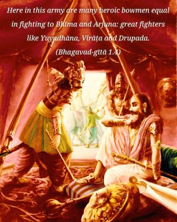
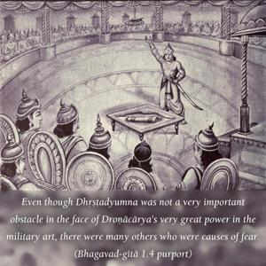
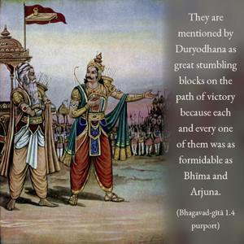
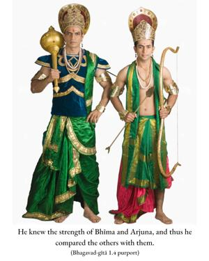

Here in this army are many heroic bowmen equal in fighting to Bhīma and Arjuna: great fighters like Yuyudhāna, Virāṭa and Drupada.




Even though Dhṛṣṭadyumna was not a very important obstacle in the face of Droṇācārya’s very great power in the military art, there were many others who were causes of fear. They are mentioned by Duryodhana as great stumbling blocks on the path of victory because each and every one of them was as formidable as Bhīma and Arjuna. He knew the strength of Bhīma and Arjuna, and thus he compared the others with them.